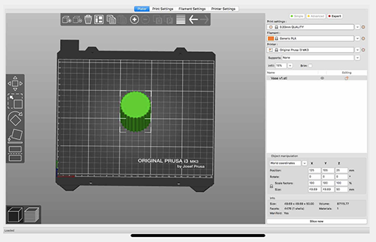
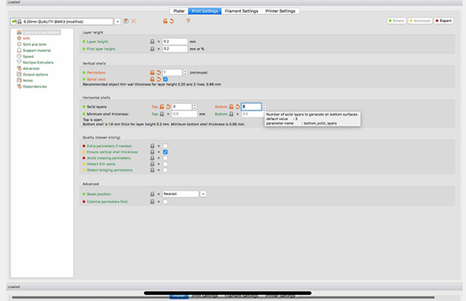
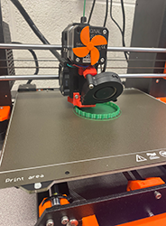
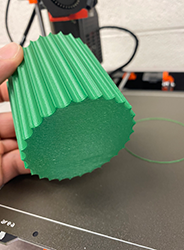
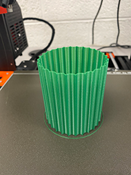
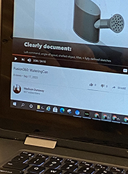
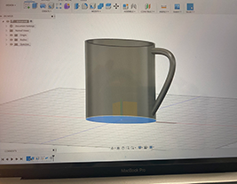
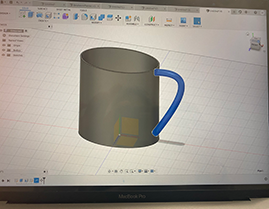
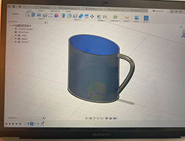

Step one: In this step, I created a circle and then made a series of inscribed circles inside of the outer circle. I extruded the inscribed circle and exported it as an STL file into Prusa Slicer.
 Step two: I used the printer settings in prusa to set the layer height to .20mm and in the Mk3 printer. After, I went into the print settings to change the mode that was originally printed in to spiral vase mode. This makes the sketch resemble a vase when it is printed.
  Step three: I chose to print my planter vase using green generic pla and I loaded it into the knob of the Asaji 3-D printer. I placed the sd card with my sketche's g-code inside of the 3-D printer and started my print. This is my final product!!
Creation of the Water Can
   I started off with a sketch of an elipse. After watching the watering can video, it only informed me of how to start my sketch off, but it didn't provide me with enough information to finsih off my sketch. I was able to extrdue my eclipse then, create a pipe(handle) for the watering can. I used the tools to hollow the eclipse. This is where I stopped at.
Down below is my design file:
If you have any questions, please fill out the form and fill me in with the details. :) It is always nice to meet new people!
Powered by w3.css